ММ 10
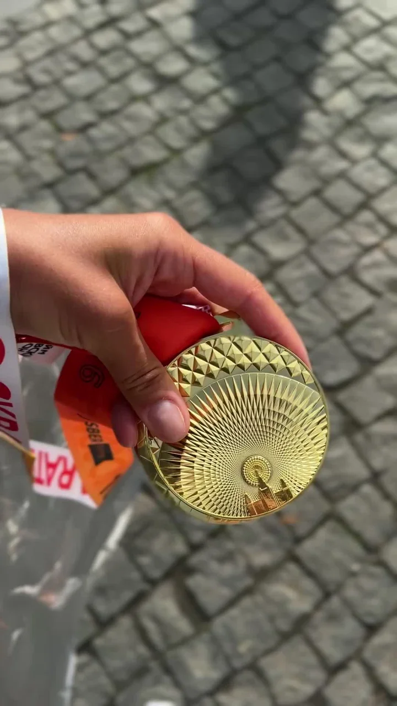
Ваш тренер по триатлону
и циклическим видам спорта
Выберите, с чего начнём.
Выбрать тренировку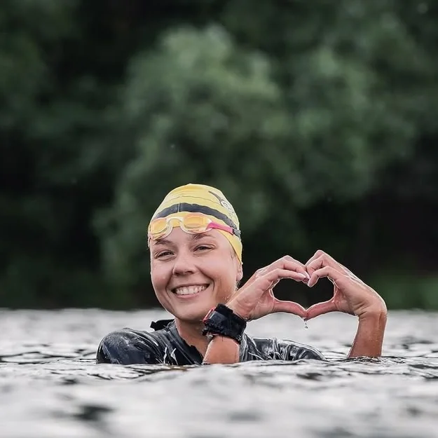
01 / Плавание Плыть С водой на ты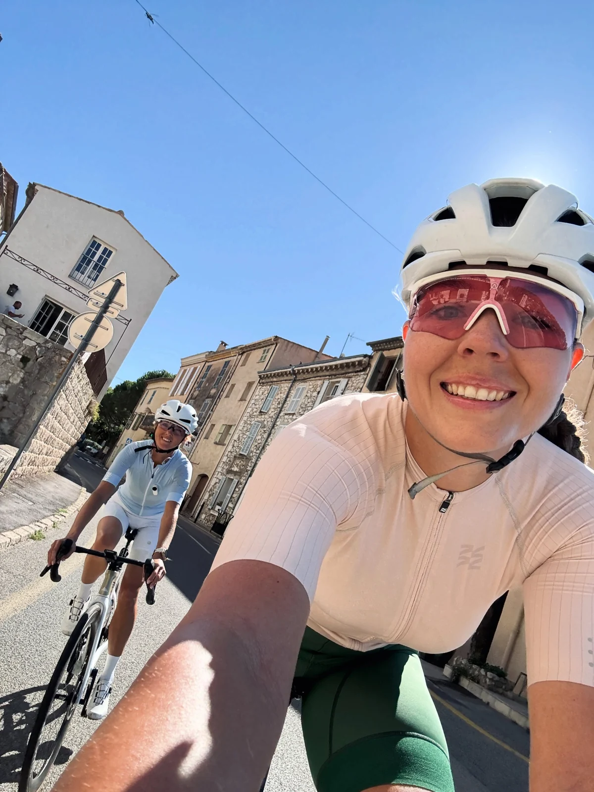
02 / Велосипед Крутить Ещё один поворот 03 / Бег Бежать К своему финишуМожно начать с нуля.
Можно замахнуться на большее.
В детстве — КМС по плаванию.
Сейчас — всё та же любовь к воде.
Когда вода
становится
своей.
Освоить технику плавания в бассейне, решиться на первый заплыв на открытой воде или подготовиться к новой дистанции. Встретимся на тренировке или разберём вашу технику по видео.
Хочу в воду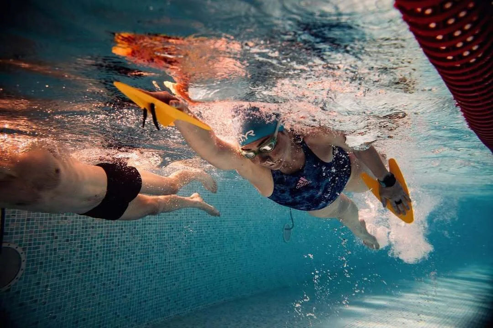
Дорога длинная.
Компания хорошая.
За плечами — однодневные и многодневные велогонки, отбор на чемпионат мира серии Granfondo. А между стартами — поездки к морю, через перевалы и просто за кофе.
Ницца и окрестности. Сентябрь 2026 года.
Три недели жизни на велосипеде.
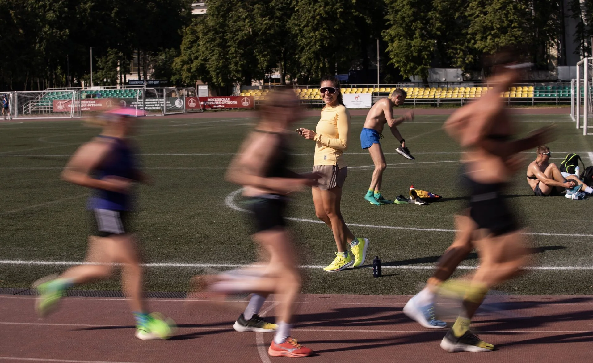
В своём темпе.
С моей поддержкой.
Сама бегаю дистанции от 5 до 50 километров. Помогу подготовиться к старту, поработать над техникой и найти место для тренировок в повседневной жизни.
Хочу на пробежку
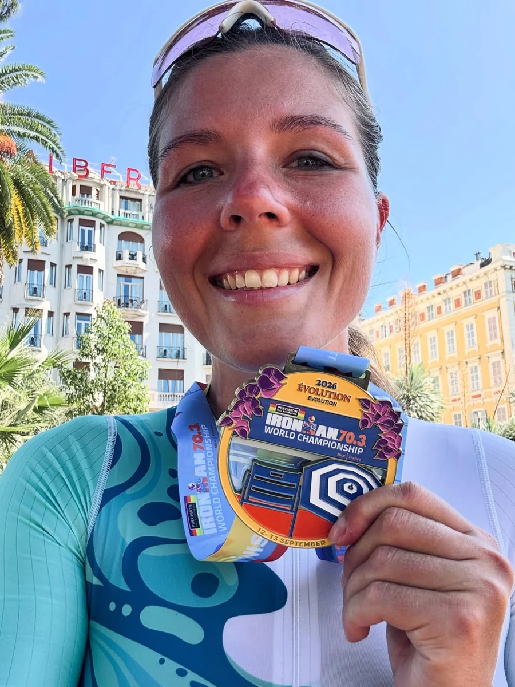
«Последние 3 километра улыбалась так, что было видно из космоса».
Это мой второй чемпионат мира по триатлону и первый в серии IRONMAN. За плечами — дистанции от суперспринта до экстремального триатлона, а ещё трейлы, заплывы и свимраны.
История этого финиша Хочу всё сразу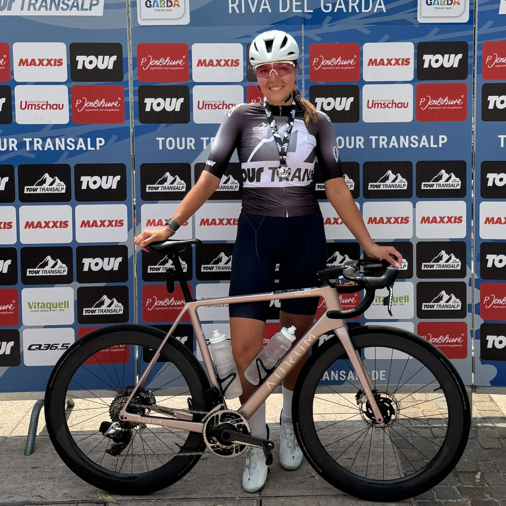
Помогаю сделать спорт частью жизни — с удовольствием от тренировок и радостью на финише.
Я спортсменка-любительница. Прошла путь от первых тренировок до участия в двух чемпионатах мира по триатлону. Больше 12 лет занимаюсь циклическими видами спорта, а с 2019 года тренирую других.
Я сертифицированный тренер по триатлону, плаванию и бегу. В детстве выполнила норматив КМС по плаванию. Прошла профессиональную переподготовку, училась у Игоря Сысоева, Натальи Скворчевской и Юрия Сдобникова. Продолжаю учиться на семинарах и применять новые знания в работе.
Учитываю работу, семью и отдых. Составляю план с учётом вашего расписания и корректирую его, когда меняются обстоятельства. У каждого спортсмена свой план, но принцип общий: движемся постепенно, от простого к сложному.
Мне можно и нужно задавать вопросы: о подготовке, технике, выборе старта и уходе за велосипедом. Поддержка — часть нашей работы.
Лично, онлайн или вместе с командой. Выберите, какая помощь нужна сейчас.
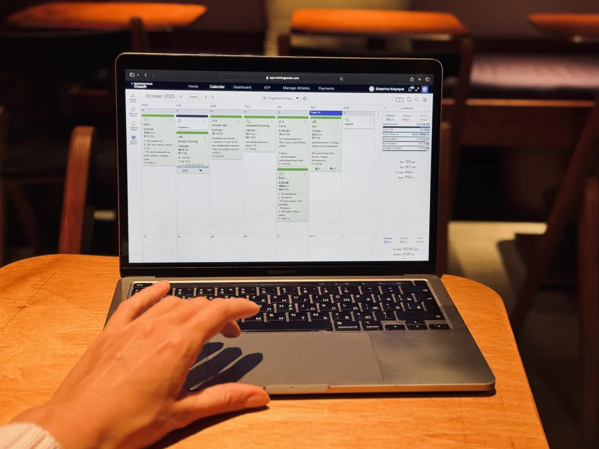
Индивидуальный план в TrainingPeaks или Intervals: учитываю ваши цели, привычный ритм жизни и время на тренировки. По ходу подготовки корректирую нагрузку, отвечаю на вопросы и помогаю разобраться с трудностями.
Обсудить сопровождение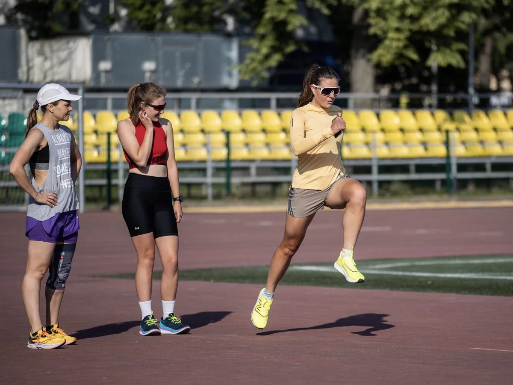
Бег, плавание, велосипед, прохождение транзитных зон, общая и специальная физическая подготовка. Подойдёт, если хотите поработать над техникой под руководством тренера.
Для спортсменов на сопровождении — 4000 ₽.
Договориться о тренировкеОчно или онлайн разберём технику, в том числе по видео, и подберём упражнения для самостоятельных занятий. Ещё можно обсудить трассу, тактику гонки или общий план подготовки к выбранному старту.
В такой план входят этапы подготовки, а не подробные задания на каждую тренировку. Он рассчитан на тех, кто уже знаком с микро- и макроциклами.
Записаться на консультацию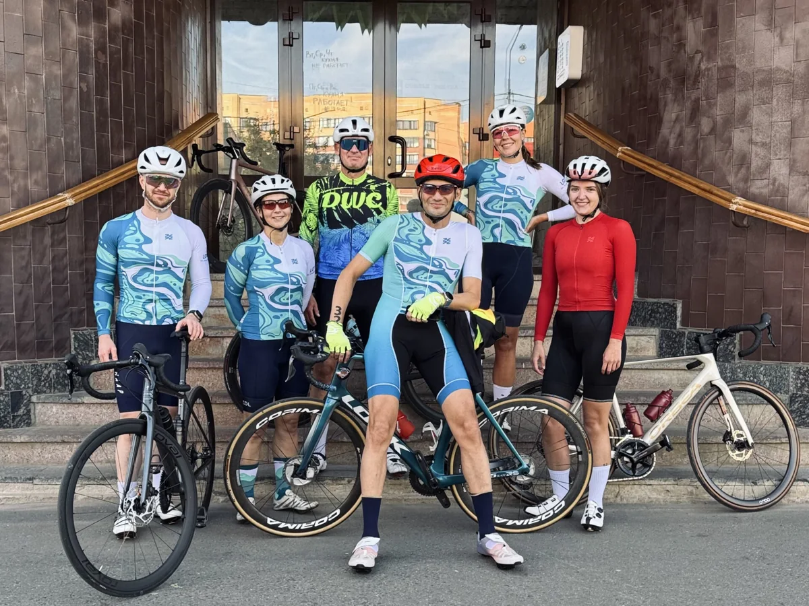
Тренировка с моей командой: бег, велосипед и отработка транзитных зон. Летом тренируемся в Лужниках, зимой — в манеже на велотреке в Крылатском.
Узнать о ближайшей тренировке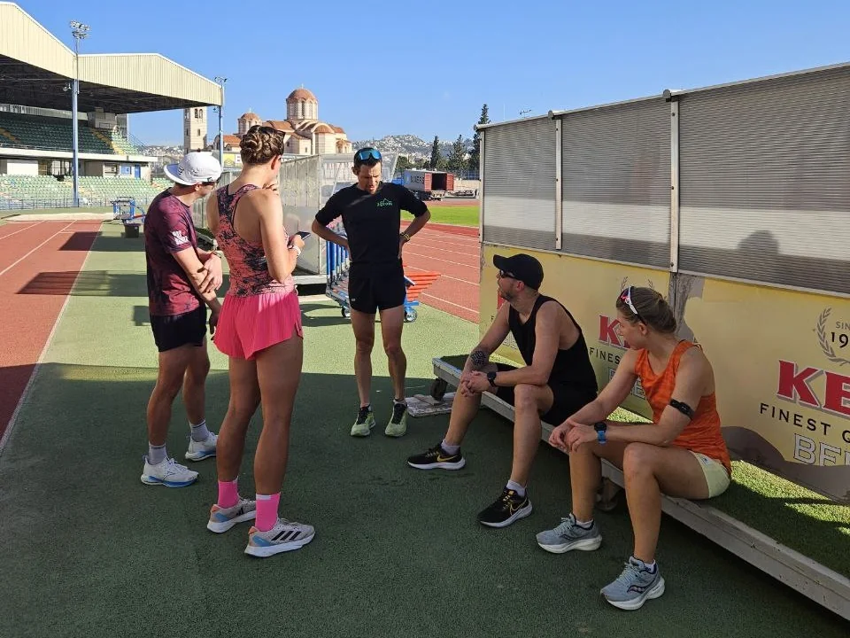
Очные групповые тренировки и общий план подготовки к командному старту. Формат и стоимость обсудим с учётом целей вашей команды.
Обсудить командную подготовку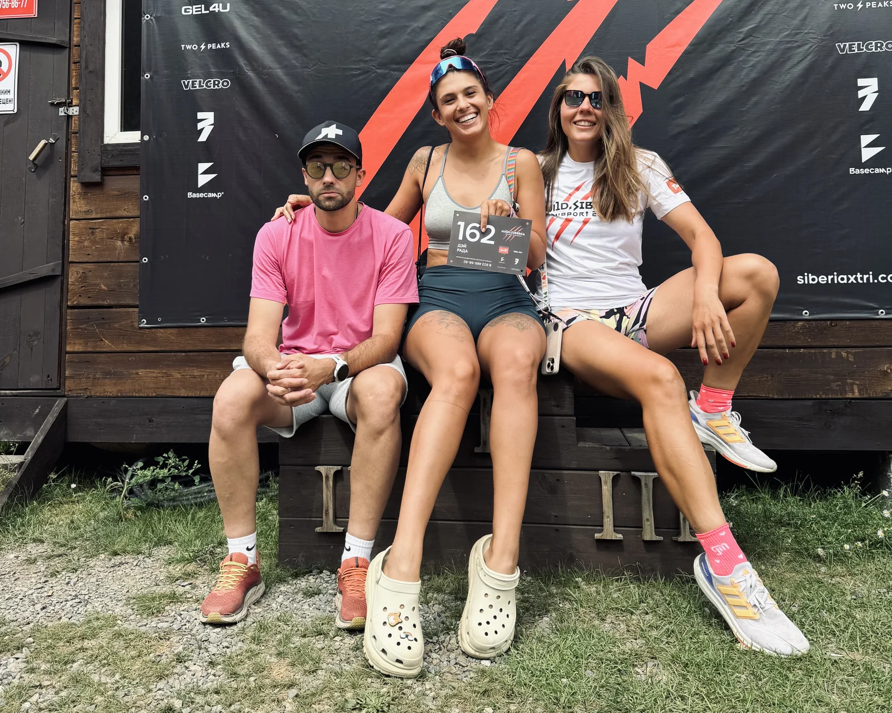
Экстремальный триатлон, велогонки и заплывы. Для тех, кто задумал что-то особенное и ищет опытного человека в команду поддержки.
Рассказать о своём старте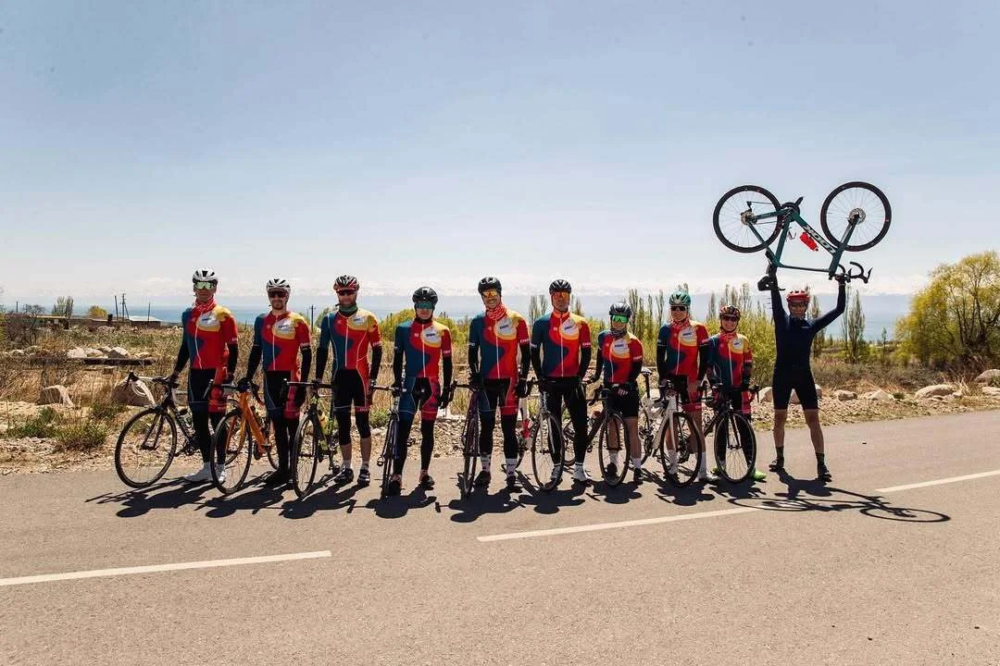
Организация тренировочных сборов в России и за рубежом — индивидуально или в группе. Место, программу и стоимость обсудим с учётом ваших целей.
Обсудить сборыИ в цифрах, и в ощущениях.
«Тренировки работают, общение и поддержка — супер. Нет слов, насколько всё позитивно. Спасибо тебе!»
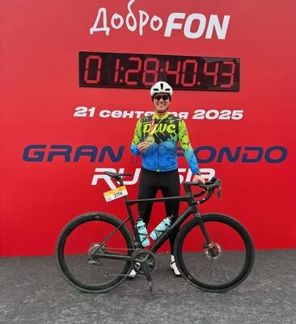
АлександрО подготовке и поддержкеХочется подвести какой-то итог году и сказать тебе спасибо. Потому что прям всё хорошо, даже с учетом моей лени и халтуры, все запланированные важные старты вполне удались. И из самого конца списка участников я уверенно переполз в середину, и даже есть удовлетворение — начало что-то получаться! Тренировки работают, общение и поддержка — супер. Нет слов, насколько всё позитивно. Спасибо тебе!
«Но в целом, конечно, силищу чувствую по сравнению с тем, что было буквально месяца 3 назад) приятное чувство))»
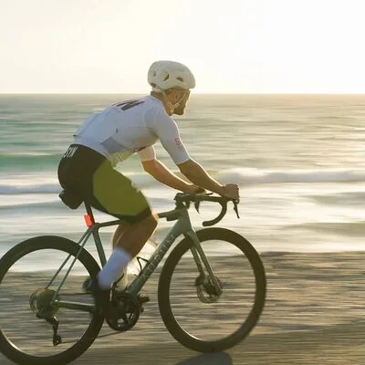
ДенисО прогрессе в тренировках— Но в целом, конечно, силищу чувствую по сравнению с тем, что было буквально месяца 3 назад) приятное чувство))
— Только спросить хотела по ощущениям как тебе, стало посильнее?
— Да, сто процентов. Ну и запас какой-то всё равно чувствуется. Думал, что all out ехал, но в конце даже немного осталось сил придавить.
«Прошло, считаю, неплохо. Выложился я прям хорошо вчера».
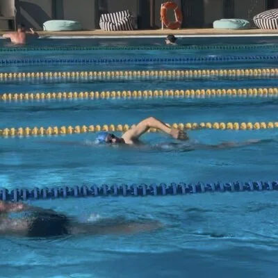
ДмитрийПосле заплыва на 3 кмЕкатерина, добрый вечер! Прошло, считаю, неплохо. Выложился я прям хорошо вчера. Время 1:01, но расстояние не известно и трека нет. Не только у меня, из-за атомной станции gps видимо глушится. Часы не работали нормально. Всего 64/138, мужском зачёте 49/84. В прошлом году было 86/111, 61/67 в мужском.
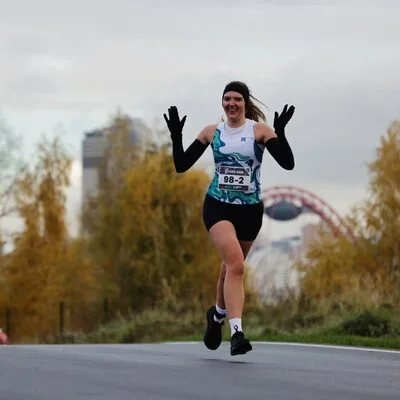
ЕвгенияТри сезона, одна дистанция.| Год | Время | Место в возрастной группе |
|---|---|---|
| 2023 | 1:19:43 | 13 |
| 2024 | 1:17:34 | 7 |
| 2025 | 1:12:35 | 2 |
Также в 2025 году: 2-е место в возрастной группе на спринте Grom Крылатское (1:25:20) и 1-е место на спринте «Николов Перевоз» (1:20:15).
Напишите, какой спорт вам интересен, как вы тренируетесь сейчас и к чему хотите прийти. Если уже выбрали старт, добавьте его название и дату.
Обсудим ваш опыт, время на тренировки и подходящий формат.
Написать в Telegram